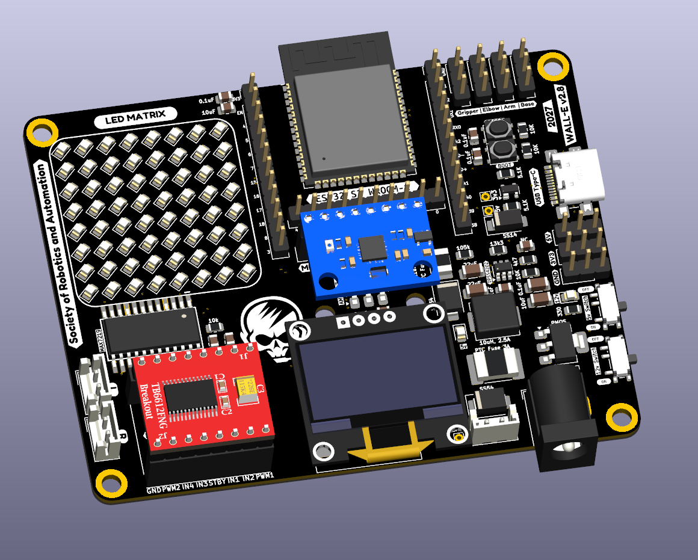

SRA VJTI · PCB design · Embedded systems
Building the SRA Wall-E development board
I designed a shared hardware platform for SRA VJTI’s Wall-E robotics workshops, bringing the ESP32-S3, motor control, sensors, and power regulation together on one board.

One board for the whole robot
Wall-E is SRA VJTI’s educational robot for introducing students to embedded systems and robotics. For workshops, a collection of separate development boards and loose wires makes it harder to focus on firmware and control. I wanted the core electronics to be available from one platform, with the controller, power, motor driver, and commonly used sensors connected in a predictable way.
The board is built around an ESP32-S3 and a two-layer PCB. Its connectors bring out the interfaces needed for robot builds, while the onboard peripherals support hands-on exercises in sensing, motor control, and display output.
Power designed in stages
Robotics hardware combines loads with very different needs. The motors need a higher-voltage supply, while the microcontroller and sensors need regulated logic rails. The board routes battery power through protection and a 12 V motor rail, then uses a TPS54302 buck stage to generate 5 V. An AMS1117 provides 3.3 V for the ESP32-S3 and logic-level peripherals. USB-C also provides a route for 5 V power and programming.
I exposed test points along the supply path so the rails can be checked one stage at a time: battery input, 12 V, protected 5 V, then 3.3 V. That makes bring-up and fault isolation much more systematic than probing an interconnected board at random.
Interfaces for robotics exercises
The board connects a TB6612FNG motor driver to the controller and includes the interfaces used by common Wall-E exercises: an LSA for line sensing, an MPU6050 for motion data, an OLED, and a MAX7219-driven LED matrix. The goal was to make these blocks easy to reach from firmware without rebuilding the wiring for every workshop.
That integration also makes the board useful beyond one robot demonstration. Students can start with a sensor or display example, then move toward motor control and complete robot behavior while staying on familiar hardware.
Designing for assembly and debugging
Combining power conversion, a wireless microcontroller, motor outputs, and sensor connectors means the layout has to balance electrical paths with physical access. Connector placement affects how the robot is wired; component placement affects whether power and signal sections can be inspected; test points make the power system easier to understand during assembly.
I iterated the board as those requirements became clearer, including the board-to-sensor connections and the placement of the main functional blocks. The final result is a compact platform that supports both the robot and the way students learn to build it.
What I took away
This project taught me to think of a PCB as part of a larger system. A useful workshop board has to make power distribution, peripherals, physical connections, and debugging work together. The design supports the SRA Wall-E workshop platform used by more than 300 students, so clarity and repeatability matter alongside circuit function.
As Electronics Head at SRA VJTI, I also mentor students using the platform. Seeing where people connect, probe, and get stuck feeds back into how I think about the next hardware revision.
The schematics and board files are available in the SRA board design repository. See also the project overview.